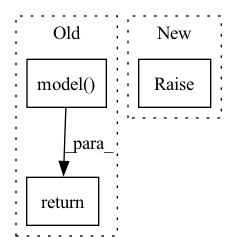

Pattern ID :24039

Before Change
-------
speaker_embeddings: torch.Tensor, shape (batch, embedding_dim)
return self.model(waveform, weights)
def to(self, *args, **kwargs) -> nn.Module:
self.model.load()
return super().to(*args, **kwargs)
After Change
-------
speaker_embeddings: torch.Tensor, shape (batch, embedding_dim)
raise NotImplementedError
class PyannoteEmbeddingModel(EmbeddingModel):
In pattern: SUPERPATTERN
Frequency: 3
Non-data size: 3
Instances
Fragment ID: 74666919
Project Name: juanmc2005/streamingspeakerdiarization
Commit Name: 4b744ed633b74a562e47675f8b8065017ee45b06
Time: 2023-03-10
Author: juanmc2005@hotmail.com
File Name: src/diart/models.py
M Class Name: EmbeddingModel
N Class Name: EmbeddingModel
M Method Name: forward(3)
N Method Name: forward(3)
M Parent Class: LazyModel
N Parent Class: nn.Module
M File Name: src/diart/models.py
N File Name: src/diart/models.py
M Start Line: 175
M End Line: 175
N Start Line: 153
N End Line: 153
'>
Before Change
-------
speaker_segmentation: torch.Tensor, shape (batch, frames, speakers)
return self.model(waveform)
def to(self, *args, **kwargs) -> nn.Module:
self.model.load()
return super().to(*args, **kwargs)
After Change
-------
speaker_segmentation: torch.Tensor, shape (batch, frames, speakers)
raise NotImplementedError
class PyannoteSegmentationModel(SegmentationModel):
'>
Fragment ID: 74666918
Project Name: juanmc2005/streamingspeakerdiarization
Commit Name: 4b744ed633b74a562e47675f8b8065017ee45b06
Time: 2023-03-10
Author: juanmc2005@hotmail.com
File Name: src/diart/models.py
M Class Name: SegmentationModel
N Class Name: SegmentationModel
M Method Name: forward(2)
N Method Name: forward(2)
M Parent Class: LazyModel
N Parent Class: nn.Module
M File Name: src/diart/models.py
N File Name: src/diart/models.py
M Start Line: 123
M End Line: 123
N Start Line: 91
N End Line: 91
'>
Before Change
attention_mask = ~(new_input_ids == self.tokenizer.pad_token_id)
assert new_input_ids.shape == embeddings.shape[0:2]
return new_input_ids, self.model(
inputs_embeds=embeddings,
attention_mask=attention_mask,
)
def pre_epoch(self) -> None:
return
After Change
input_ids: torch.Tensor,
prefix_ids: Optional[torch.Tensor],
) -> Tuple[torch.Tensor, torch.Tensor]:
raise NotImplementedError()
def pre_epoch(self) -> None:
return
'>
Fragment ID: 74666920
Project Name: csinva/imodelsx
Commit Name: 2146a56d4f9731bddbc01e4a9309cff248e6285b
Time: 2023-02-07
Author: jxmorris12@gmail.com
File Name: imodelsx/iprompt/utils.py
M Class Name: PrefixModel
N Class Name: PrefixModel
M Method Name: forward(3)
N Method Name: forward(3)
M Parent Class: nn.Module,abc.ABC
N Parent Class: nn.Module,abc.ABC
M File Name: imodelsx/iprompt/utils.py
N File Name: imodelsx/iprompt/utils.py
M Start Line: 236
M End Line: 247
N Start Line: 246
N End Line: 246